Ten critters to hunt
Ladybugs, feathers, mice, ribbons, crickets, fish, lizards, butterflies, birds and a silent laser dot.
A game for cats
pawpawSet your iPad down flat, tap PLAY, and little critters scurry across the screen for your cat to catch with a tap of the paw.
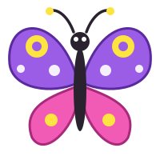
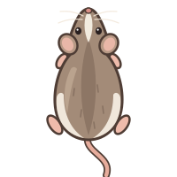
Once one cat starts, the others want in.
Tap a video to pause it.
Every critter moves like real prey: it darts, freezes, twitches, hops and drifts, so the hunt feels real to your cat.
Ladybugs, feathers, mice, ribbons, crickets, fish, lizards, butterflies, birds and a silent laser dot.
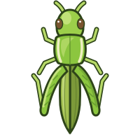
Critters rustle before they run in, and their sounds come from the side they enter.
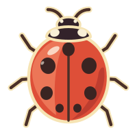
A box, a leaf pile, a lily pad or a snow mound. Critters under one can't be caught, just like the real thing.
Large critters, generous tap areas, multi-touch and drag-to-catch. A missed tap startles the nearest critter.
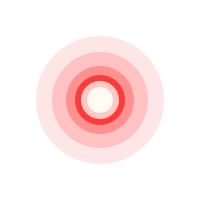
Dark backgrounds, colours picked with cat vision in mind, never more than two critters at once, and smooth motion at up to 120 Hz.
The pace adapts during a round, and a critter changes its look after a few catches in a row.
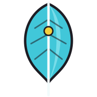
Feather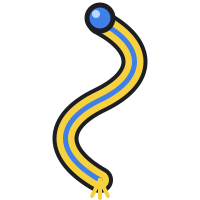
Ribbon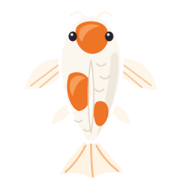
Fish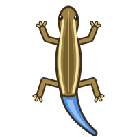
Lizard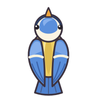
BirdCrate, Grass, Pond and Snow. Fish only swim in the Pond, and lizards only live on Grass.
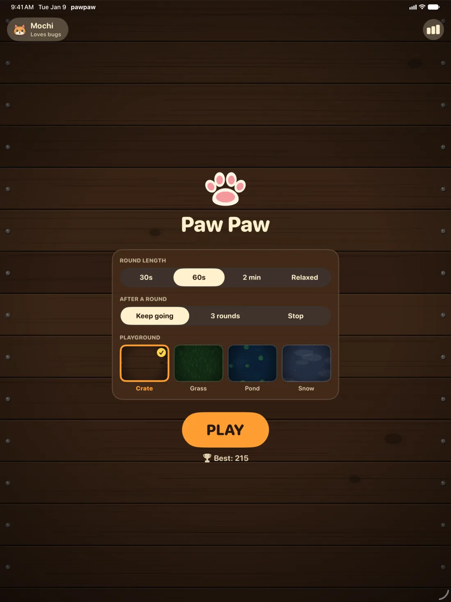
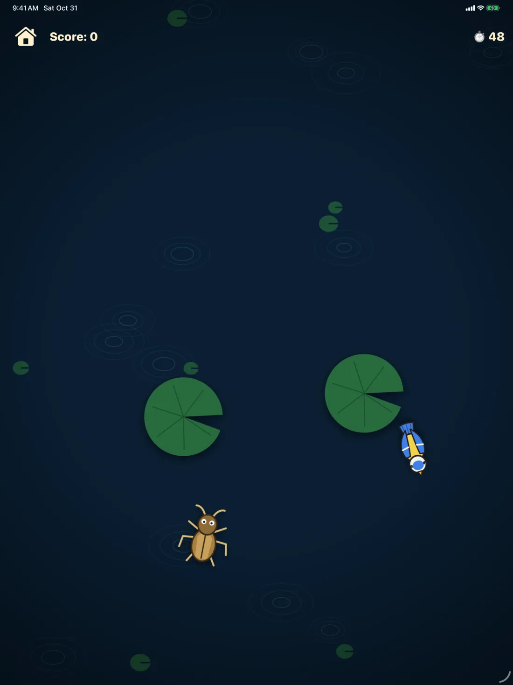
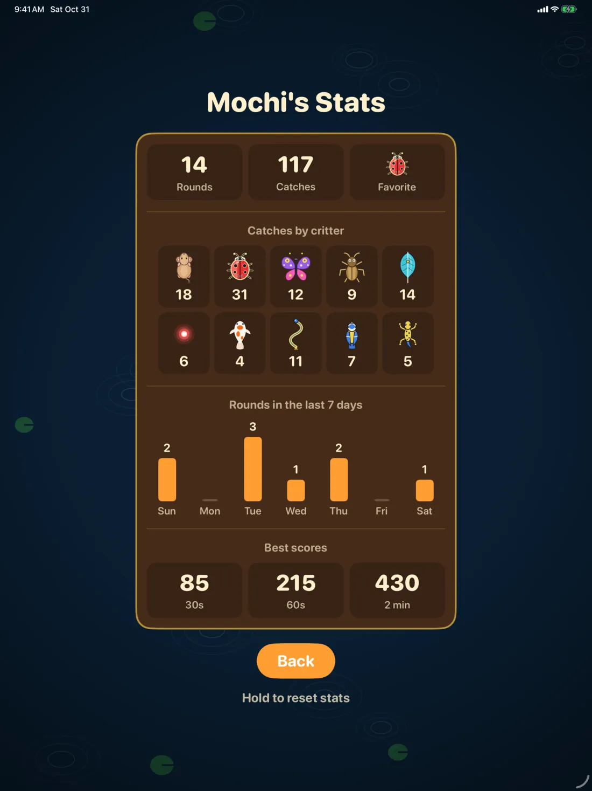
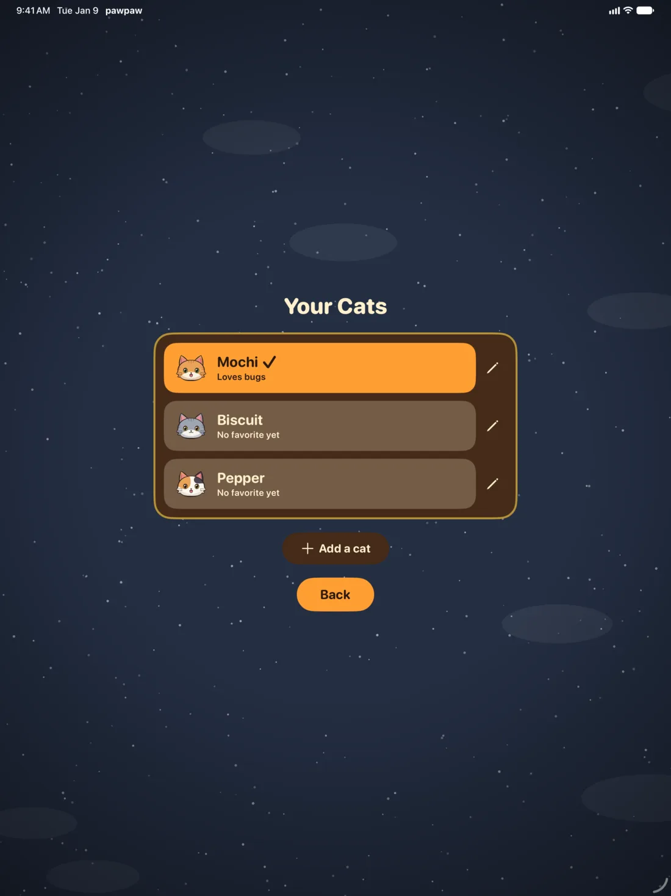
Also on iPhone, with a simpler hunt: one critter at a time, in landscape.
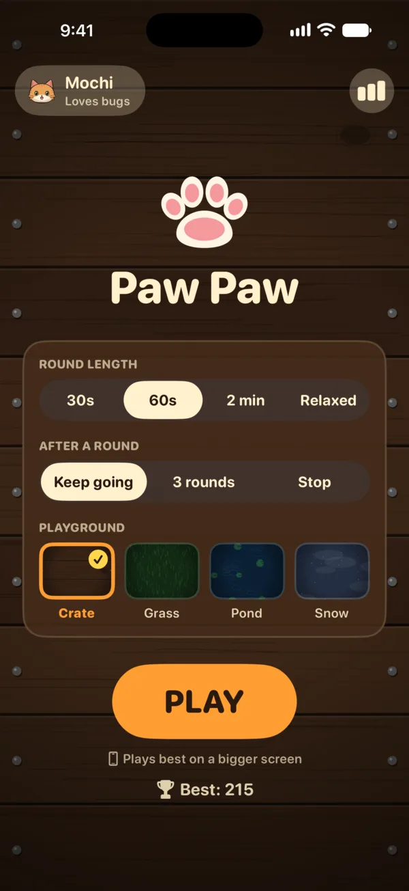
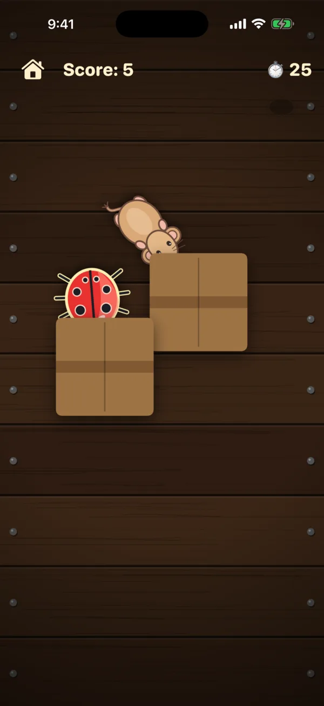
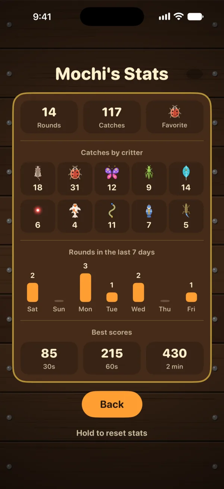
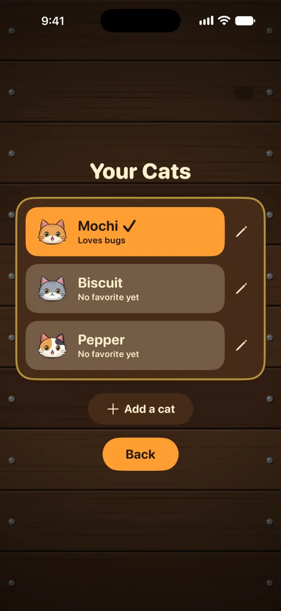
You pick the round. Your cat does the rest.
No ads, no accounts, no in-app purchases and no tracking. pawpaw works offline, and everything stays on your device. Read the privacy policy.
Always watch your cat while it plays. Claws can scratch screens, so a screen protector is a good idea. Set the device flat on a stable, low surface, keep sessions short, and stop if your cat seems stressed or frustrated.